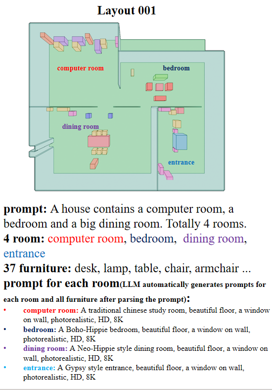
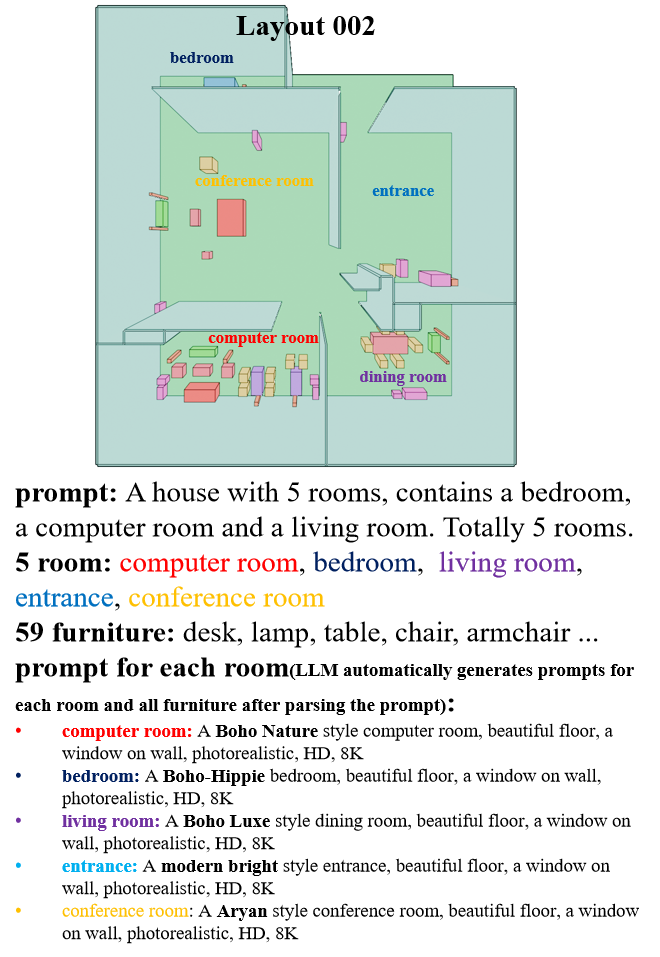
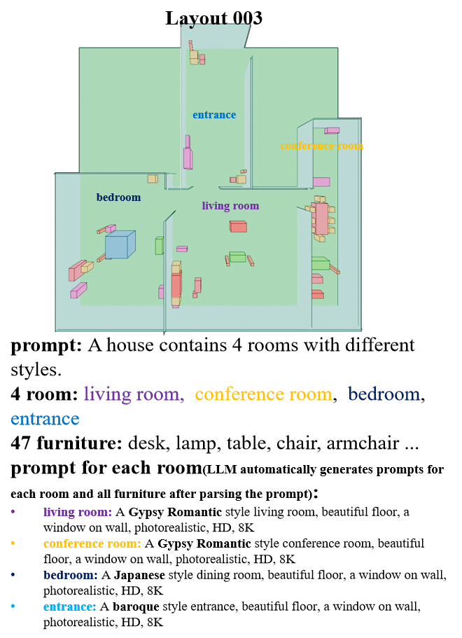
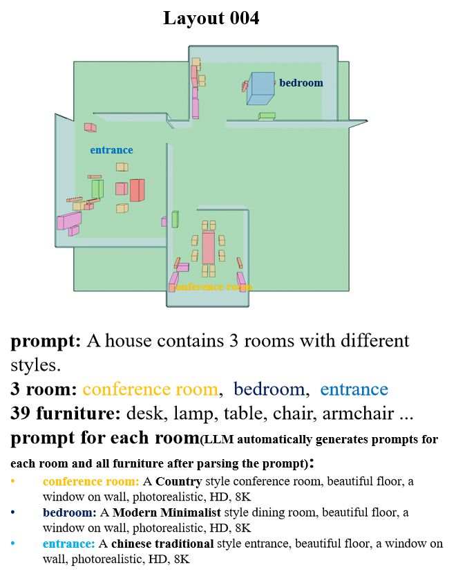
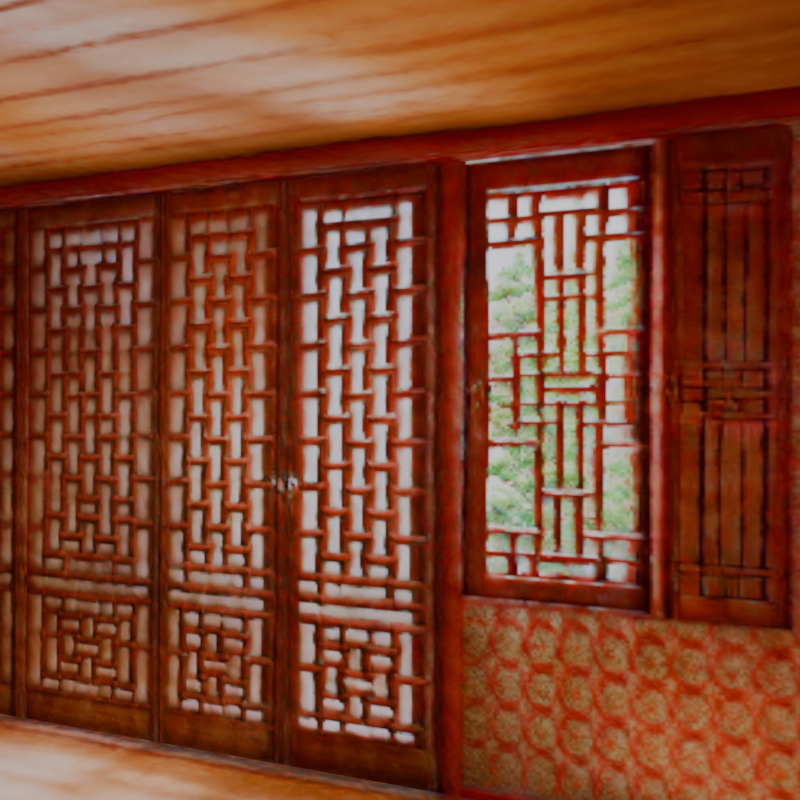
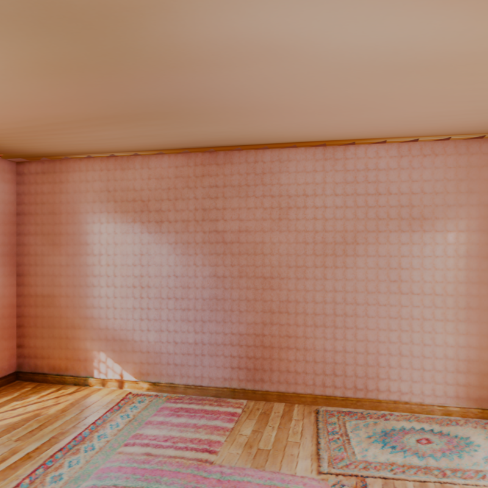
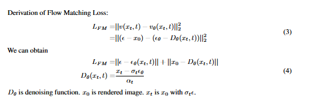
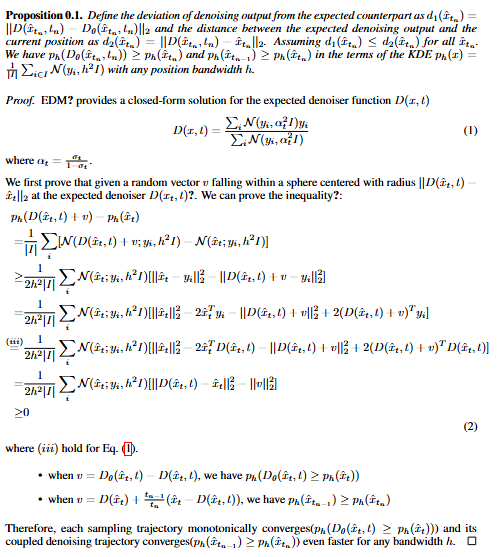

Automated generation of complex, interactive indoor scenes tailored to user prompt remains a formidable challenge. While existing methods achieve indoor scene synthesis, they struggle with rigid editing constraints, physical incoherence, excessive human effort, single-room limitations, and suboptimal material quality.
To address these limitations, we propose SceneLCM, an end-to-end framework that synergizes Large Language Model (LLM) for layout design with Latent Consistency Model(LCM) for scene optimization. Our approach decomposes scene generation into four modular pipelines: (1) Layout Generation. We employ LLM-guided 3D spatial reasoning to convert textual descriptions into parametric blueprints(3D layout). And an iterative programmatic validation mechanism iteratively refines layout parameters through LLM-mediated dialogue loops; (2) Furniture Generation. SceneLCM employs Consistency Trajectory Sampling(CTS), a consistency distillation sampling loss guided by LCM, to form fast, semantically rich, and high-quality representations. We also offer two theoretical justification to demonstrate that our CTS loss is equivalent to consistency loss and its distillation error is bounded by the truncation error of the Euler solver; (3) Environment Optimization. We use a multiresolution texture field to encode the appearance of the scene, and optimize via CTS loss. To maintain cross-geometric texture coherence, we introduce a normal-aware cross-attention decoder to predict RGB by cross-attending to the anchors locations in geometrically heterogeneous instance. (4)Physically Editing. SceneLCM supports physically editing by integrating physical simulation, achieved persistent physical realism.
Extensive experiments validate SceneLCM's superiority over state-of-the-art techniques, showing its wide-ranging potential for diverse applications.




prompt: A Boho-Hippe style bedroom, beautiful floor, a window on wall, photorealistic, HD, 8K
prompt: A Bohemian style bedroom, beautiful floor, a window on wall, photorealistic, HD, 8K
prompt: A cubism art style bedroom, beautiful floor, a window on wall, photorealistic, HD, 8K
prompt: A Modern Children bedroom, beautiful floor, a window on wall, photorealistic, HD, 8K
prompt: A Gypsy-classic style dining room, beautiful floor, a window on wall, photorealistic, HD, 8K
prompt: A cubism art style dining room, beautiful floor, a window on wall, photorealistic, HD, 8K
prompt: A Neo-hipple style dining room, beautiful floor, a window on wall, photorealistic, HD, 8K
prompt: A Gypsy dining room, beautiful floor, a window on wall, photorealistic, HD, 8K
We can navigate between multiple rooms while rendering them simultaneously.
We tilt the room by 30 degrees, causing the furniture to move due to gravity.
prompt: A cozy office chair with a big pink back, HD, 4K.
prompt: A swivel office chair with some beautiful texture, HD, 4K.
prompt: A rectangular glass-top coffee table with a metal frame. HD, 4K.
prompt: A beautiful office chair, photorealistic, HD, 8K
prompt: A modern comfortable sofa, HD, 4K.
prompt: A wooden desk with metal legs, photorealistic, HD, 8K
prompt: A wooden desk, rich texture, photorealistic, HD, 8K
prompt: A green comfortable sofa, photorealistic, HD, 4K
prompt: A portrait of the Ghost Rider, head, HDR, photorealistic, 8K.
prompt: A portrait of Groot, head, HDR, photorealistic, 8K
prompt: A Gundam model, with detailed panel lines and decals, photorealistic, 8K, HDR
prompt: A Gundam Barbatos Lupus Rex model, Gundam, Barbatos, with detailed panel lines and decals, photorealistic, 8K, HDR.
We generate multiple rooms simultaneously. In the previous examples, although each video was rendered within a single room, one can still see other rooms and their furniture at the doorway of the room

Start Frame

End Frame
Although Japanese and Chinese styles share similar color schemes, Japanese style predominantly features rectangular patterns with cherry blossoms as decorative motifs.
Chinese style predominantly incorporates stripes and paper-cut window decorations as ornamental elements.
Directly optimize the texture map via CTS loss.
Our method.
The SDS and ISM models require significantly more iterations and longer training durations to achieve comparable performance to ours.
5000 epoch, batch size=4, ~1.1h
4500 epoch, batch size=4, ~40min(unstable)
3000 epoch, batch size=4, ~28min

Flow Matching loss is not work in our experiment.
The main reason is that the denoising function is converage faster than noise, the converage speed is inconsistent. We proof this conclusion in the following.
Concretely,
